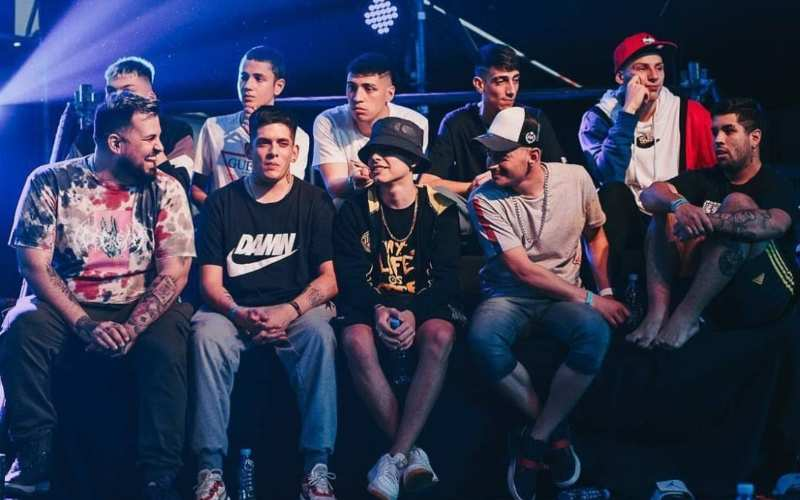

El freestyle rap, (en español, rap estilo libre), se trata de un estilo musical que consiste en rapear con ritmo o flow de forma improvisada o con una letra escrita en un micro libre sobre una base. La persona que improvisa se la llama rapero, MC, freestyler o gallo.
En hispanoamérica principalmente existen competencias en donde las competidores se rivalizan haciendo freestyle únicamente de manera improvisada. Si bien hay competiciones que se tratan de batallas escritas, esta modalidad no es común, e incluso está prohibida en la mayoría de las batallas.
FreeStyler en vivo

Mapa del mundo (Practicantes de FreeStyle)
En todas las zonas del país se ha estado desarrollando el freestyle. La repercusión de esta disciplina está en constante desarrollo y cada sector del país tiene sus propios eventos renombrados.
Entre los freestylers más conocido de Argentina se encuentran: Klan, MKS, Dani, Dtoke, Sony, Papo, Kodigo, Cacha, Wos, Replik, Mecha, Zaina, Stuart,Nacho, Sub, Wolf, entre otros.
A pesar de que Colombia no es un país donde abunde la cultura del rap freestyle, ha tenido un crecimiento notable en los últimos años
También ha sido sede de la Red Bull Batalla De Los Gallos Internacional. Los gallos que destacan de Colombia son Valles T, Rbn, Carpediem, Big Killa, Ñko, Coloso y Marithea.
El territorio chileno ha sido cuna para varias competiciones de freestyles, tales como Batalla De Maestros (BDM) en sus subgéneros (Deluxe, Gold, Kallejera, etc).
Internacionalmente, entre los freestylers chilenos, destacan: Nitro, Teorema, Kaiser, Pepe Grillo, Acertijo, Stigma, Ricto, Drose, El Menor y jokker
Existen diversas competiciones de estilo libre tal como puede ser la Red Bull Batalla de los Gallos o la Freestyle Master Series. Posee la mayor cantidad de trofeos dicha competencia.
Los freestylers de España más destacados son : Chuty, Arkano, Skone (Jose Miguel Manzano), Zasko Master, Force, Errecé, Blon, Walls, Bnet, Bta, SweetPain y Sara Socas, entre otros.

México cuenta con 3 campeones de Red Bull Batalla de Los gallos Internacional que son: Hadrian ,Aczino y Rapder en segundo lugar empatando con argentina con 3 títulos, abajo de España con 6.
Los freestylers de México más destacados son: Aczino, Rapder, RC, Jony Beltrán, Zticma, Potencia, Dominic, Lobo Estepario, Jack Adrenalina, entre otros
Consisten dos o más improvisadores compiten para llevarse el título de alguna competición; sin dejar de lado el valor que se considera gracias al complejo manejo de la lírica, la creación más compleja de métrica, fonética, uso de tempo y pausas. Además, frecuentemente se toma en cuenta el contenido de las rimas.
Es un evento organizado por Red Bull desde el año 2005. Consiste en una serie mundial que hace eco de su fama internacionalmente, debido a que también se organiza en varios países hispano-parlantes cuyos ganadores después compiten entre sí.
Para mayor información dirigirse a la siguiente página => Red Bull Batalla de los Gallos
El evento se realiza cada año con diferentes modalidades (3x3,2x2,1x1), etc.
Para mayor información dirigirse a la siguiente página => God Level Fest
Urban Roosters es una empresa que impulsa el freestyle en diversos países de habla hispana. En el año 2017 Urban Roosters creó en España la competición de freestyle rap Freestyle Master Series, una liga de 10 participantes en la que los freestylers se enfrentan entre sí una vez en diferentes jornadas

Para mayor información dirigirse a la siguiente página => Urban Roosters y FMS
También conocida como BDM, es otra de las competiciones de Freestyle. Esta fue un lugar de acogida para los freestyler chilenos y permitió que el freestyle chileno creciera exponencialmente.
Para mayor información dirigirse a la siguiente página => Batalla de Maestros